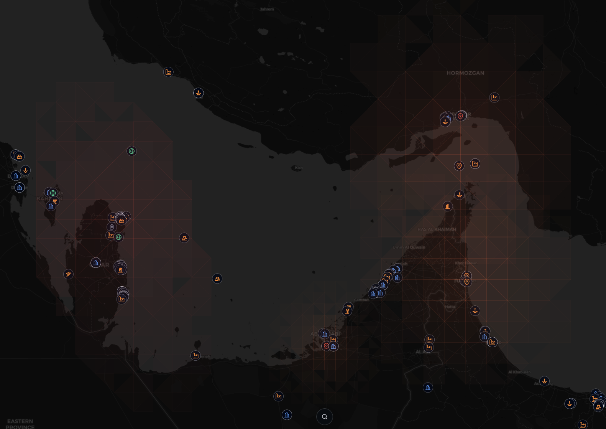

01
Structured World Model
Entities, dependencies, topology, operational context
Horizon organizes organizations, assets, corridors, products, and events inside a governed world model so consequence can be traced rather than guessed.
Horizon Decision Surface
Horizon turns fragmented entities, signals, dependencies, and exposure into a structured analytical surface for monitoring, investigation, and action.

01
Entities, dependencies, topology, operational context
Horizon organizes organizations, assets, corridors, products, and events inside a governed world model so consequence can be traced rather than guessed.
02
Ingestion, retrieval, routing, consequence
Signals are grounded against structured entities and dependencies, then surfaced where they change exposure, relevance, and decision priority.
03
Retrieval, synthesis, governed workflows
AI helps expand research, structure evidence, compare patterns, and synthesize working hypotheses while keeping outputs reviewable, traceable, and operationally useful.
01
Assets, routes, bottlenecks, propagation
Trace how disruptions move through suppliers, logistics corridors, industrial clusters, and strategic nodes to identify operational concentration before it becomes a supply event.

02
Ownership chains, affiliates, decision authority
Clarify who controls what, through which entities, under which layers of ownership, influence, or delegated authority, when governance structure is itself part of the operating risk.

03
Policy shifts, jurisdictional pressure, downstream consequence
Connect regulatory decisions to jurisdictions, entities, corridors, and production footprints so teams can see where legal or policy shifts become operational constraints.

01
Routes, nodes, exposure
Map facilities, transit routes, suppliers, and operating concentration in one connected geographic layer.
02
Entities, control, ownership, linkage
Move from isolated entities to relationship structures: ownership, influence, dependency, and hidden operational adjacency.
03
Impact zones, spillovers, proximity
Overlay disruption zones with assets, routes, and dependencies to see where exposure becomes operational.
04
Industrial zones, adjacency, operating density
Inspect industrial clusters in more detail to understand plant adjacency, corridor dependence, and where localized disruption can propagate across nearby assets.

Horizon is built for teams that need structured decision intelligence rather than disconnected monitoring, static reporting, or unguided search.